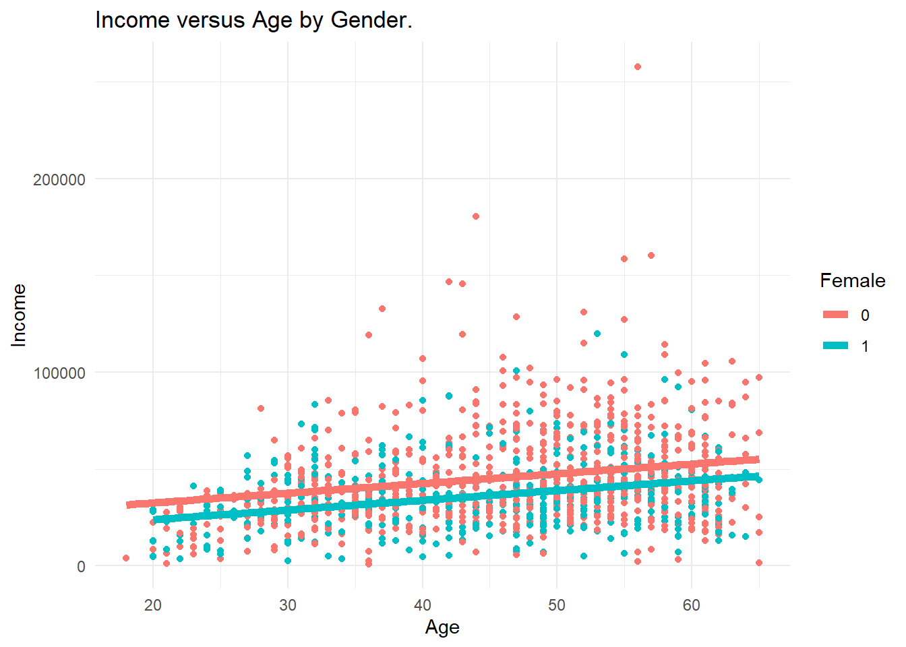
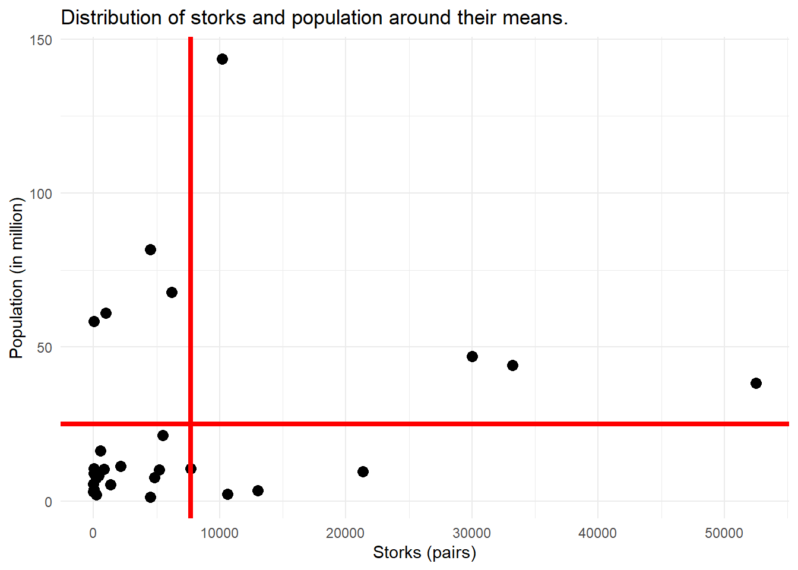

Chapter 9 Geo Data
Geospatial data, also known as geographic or spatial data, refers to information that contains explicit geographical locations or spatial attributes. Analyzing and visualizing geospatial data is essential in various fields, including geography, environmental sciences, urban planning, epidemiology, and transportation not to mention social science.
9.1 Where Are You?
Sites like https://gps-coordinates.org/where-am-i.php can tell where on Earth you are at the moment. They return a map view on your current surroundings and geo-coordinates.
Ask Google Maps for Viadrina European University returns two numbers 52.342977500409994, latitude and 14.555877070488613 latitude.
## Warning: Paket 'sf' wurde unter R Version 4.2.3 erstellt## Linking to GEOS 3.9.3, GDAL 3.5.2, PROJ 8.2.1; sf_use_s2() is TRUE## Warning: Paket 'mapview' wurde unter R Version 4.2.3 erstellt## Warning: Paket 'leaflet' wurde unter R Version 4.2.1 erstellt9.2 Geo-coordinates
Latitude and longitude are geographic coordinates used to specify locations on the Earth's surface. They are used to precisely determine a point's position in terms of its north-south and east-west positions.

(#fig:lon_lat)Longitude lines are perpendicular to and latitude lines are parallel to the Equator.
See Figure @ref(fig:lon_lat).
9.2.1 Latitude and Longitude
Latitude measures the north-south position of a point on the Earth. The equator is defined as 0 degrees latitude, and it divides the Earth into the Northern Hemisphere (positive latitudes) and the Southern Hemisphere (negative latitudes). The range of latitude extends from -90 degrees (South Pole) to +90 degrees (North Pole).
Longitude measures the east-west position of a point on the Earth. It is also measured in degrees, with the Prime Meridian serving as the reference point. The Prime Meridian, located at Greenwich, London, is defined as 0 degrees longitude. Longitude lines extend from the Prime Meridian to the International Date Line, which is roughly 180 degrees longitude. The range of longitude extends from -180 degrees to +180 degrees.
9.2.2 It's convention
Who invented latitude and longitude? Why is latitude positive in the north? What is the north the north anyway? And who decided on the prime meridan in England?
History
The decision to have latitude positive in the north and negative in the south is essentially arbitrary. The convention was established to provide a consistent and universally accepted reference frame for geographic coordinates. It was likely influenced by the fact that most early civilizations and cartographers were based in the northern hemisphere.
Regarding the choice of the prime meridian (0 degrees longitude) passing through Greenwich, England, it was largely due to historical reasons and the influence of the British Empire. The concept of establishing a prime meridian dates back to the 19th century when international cooperation in navigation and mapping was increasing. In 1884, at the International Meridian Conference held in Washington, D.C., representatives from various countries agreed to adopt the Greenwich Meridian as the Prime Meridian, mainly because the British Royal Observatory in Greenwich was already internationally recognized for its contributions to astronomy and navigation.
9.2.3 Different precision
In general, coordinates with six decimal places (0.000001 degrees) can provide location accuracy to approximately within a few centimeters. Each additional decimal place adds further precision, narrowing down the location to smaller units of measurement.
The entrance of Viadrina main building and the best coffee in town are about 40m away. Latitude is different in the 4th and longitude differs in the 3rd decimal.
## name lat lon
## 1 Viadrina Main Building 52.34227 14.55386
## 2 Best Coffee In Town 52.34212 14.554599.2.4 Different units
Look again at figure 1. The intuition is that Lat and long are angles.
Decimal degrees (DD): 41.40338, 2.17403
Degrees, minutes, and seconds (DMS): 41°24'12.2"N 2°10'26.5"E
Degrees and decimal minutes (DMM): 41 24.2028, 2 10.4418https://r-spatial.org/book/08-Plotting.html
Figure 8.2: Germany in equirectangular projection: with axis units degrees (left) and metres in the equidistant cylindrical projection (right)
## Warning: Paket 'rnaturalearth' wurde unter R Version 4.2.3 erstellt## Support for Spatial objects (`sp`) will be deprecated in {rnaturalearth} and will be removed in a future release of the package. Please use `sf` objects with {rnaturalearth}. For example: `ne_download(returnclass = 'sf')`DE <- st_geometry(ne_countries(country = "germany",
returnclass = "sf"))
DE |> st_transform("+proj=eqc +lat_ts=51.14 +lon_0=90w") ->
DE.eqc
par(mfrow = c(1, 2), mar = c(2.2, 2.2, 0.3, 0.5))
plot(DE, axes = TRUE)
plot(DE.eqc, axes = TRUE)
9.2.5 Different perspectives
# Now, lets transform Germany into a CRS optimized for Iceland
ger_rep.spdf <- st_transform(DE.eqc, crs = 5325)
par(mfrow = c(1, 2), mar = c(2.2, 2.2, 0.3, 0.5))
plot(DE.eqc, axes = TRUE)
plot(ger_rep.spdf, axes = TRUE)
Test this yourself. Go to Google Maps and navigate to the middle of Iceland. Now, look how the shape of Germany changes.
9.2.6 Different distance between two coordinates
## Warning: Paket 'geosphere' wurde unter R Version 4.2.2 erstellt# Define the coordinates of two points
coord1 <- c(40.7128, -74.0060) # New York City
coord2 <- c(51.5074, -0.1278) # London
# Calculate the distance using the 'distGeo' function in meters
dist_great_circle <- distGeo(coord1, coord2)
# Calculate the beeline distance using the 'distMeeus' function
dist_bee <- distMeeus(coord1, coord2)
dist_great_circle## [1] 8234358## [1] 8234367The distGeo function from the geosphere package calculates the great circle distance between two points on the Earth's surface. The result is stored in the distance variable.
Haversine.
9.3 From Points And Polygons
Minimal polygon.
# Define the coordinates of the polygon vertices
x <- c(1, 2, 3, 2) # X-coordinates of vertices
y <- c(1, 2, 1, 0) # Y-coordinates of vertices
# Create a plotting window
plot.new()
plot.window(xlim = c(0, 4), ylim = c(-1, 3))
# Plot the polygon
polygon(x, y)
# Add labels for the vertices (optional)
text(x, y, labels = 1:length(x), pos = 3)
Polygon for a country.
## Warning: Paket 'raster' wurde unter R Version 4.2.1 erstellt## Lade nötiges Paket: sp## Warning in getData("GADM", country = "Ethiopia", level = 2): getData will be removed in a future version of raster
## . Please use the geodata package instead## Please note that rgdal will be retired during October 2023,
## plan transition to sf/stars/terra functions using GDAL and PROJ
## at your earliest convenience.
## See https://r-spatial.org/r/2023/05/15/evolution4.html and https://github.com/r-spatial/evolution
## rgdal: version: 1.6-7, (SVN revision 1203)
## Geospatial Data Abstraction Library extensions to R successfully loaded
## Loaded GDAL runtime: GDAL 3.5.2, released 2022/09/02
## Path to GDAL shared files: C:/Users/Marco2020/AppData/Local/R/win-library/4.2/rgdal/gdal
## GDAL binary built with GEOS: TRUE
## Loaded PROJ runtime: Rel. 8.2.1, January 1st, 2022, [PJ_VERSION: 821]
## Path to PROJ shared files: C:/Users/Marco2020/AppData/Local/R/win-library/4.2/rgdal/proj
## PROJ CDN enabled: FALSE
## Linking to sp version:2.0-0
## To mute warnings of possible GDAL/OSR exportToProj4() degradation,
## use options("rgdal_show_exportToProj4_warnings"="none") before loading sp or rgdal.plot(Ethiopia)
points(coordinates(Ethiopia[which(Ethiopia$NAME_2 == "Addis Abeba"),]),
pch = 16, col = 2, cex = 2)
## Warning: Paket 'geodata' wurde unter R Version 4.2.3 erstellt## Lade nötiges Paket: terra## Warning: Paket 'terra' wurde unter R Version 4.2.3 erstellt## terra 1.7.39Ethiopia2 <- gadm(country = "Ethiopia", path = tempdir(), level=1, version="latest", resolution=1)
plot(Ethiopia2)
9.3.1 Shapefiles
In R, shapefiles are commonly used to represent geographic data. Shapefiles are a popular geospatial vector data format that stores both geometric and attribute information about geographic features. They are widely used in geographic information system (GIS) applications and can be easily imported and manipulated in R using various packages such as sf, rgdal, or maptools.
.dbf File: This file is the attribute table file associated with the shapefile. It stores the attribute data for each geographic feature in a tabular format. The attributes can include information such as names, IDs, population, or any other relevant data associated with the features. The .dbf file follows the dBase file format and can be accessed using functions like read.dbf() or read.dbf()$data in R.
.prj File: This file contains the coordinate reference system (CRS) information for the shapefile. It specifies the spatial reference system and projection details, such as the coordinate units, projection method, and datum used. The CRS information is crucial for correctly interpreting and aligning the spatial data in the shapefile. In R, the CRS information can be accessed or set using functions provided by the sf package, such as st_crs() or st_set_crs().
.shp File: This file stores the actual geometric data of the shapefile. It contains information about the shape, size, and location of each geographic feature, such as points, lines, or polygons. Each feature is represented by a set of vertices or coordinates.
.shx File: This file is the shapefile index file. It provides a quick lookup or index of the geometric features in the shapefile. It helps in efficiently accessing specific features without reading the entire shapefile.
9.4 Spatial scale
Zoom in, zoom out, what is the best zoom level for an analysis?
Inadequate spatial scales refer to situations where the chosen scale of analysis in spatial research is not suitable for capturing the underlying spatial processes or phenomena. It occurs when the spatial resolution or extent of analysis is either too coarse or too fine to effectively capture the patterns and relationships of interest. Here's more information on inadequate spatial scales, examples, and how to find an appropriate scale:
Choosing an appropriate spatial scale is crucial to ensure that the analysis captures the relevant spatial patterns, relationships, and processes. It requires careful consideration of the research question, data characteristics, and prior knowledge of the phenomena under investigation.